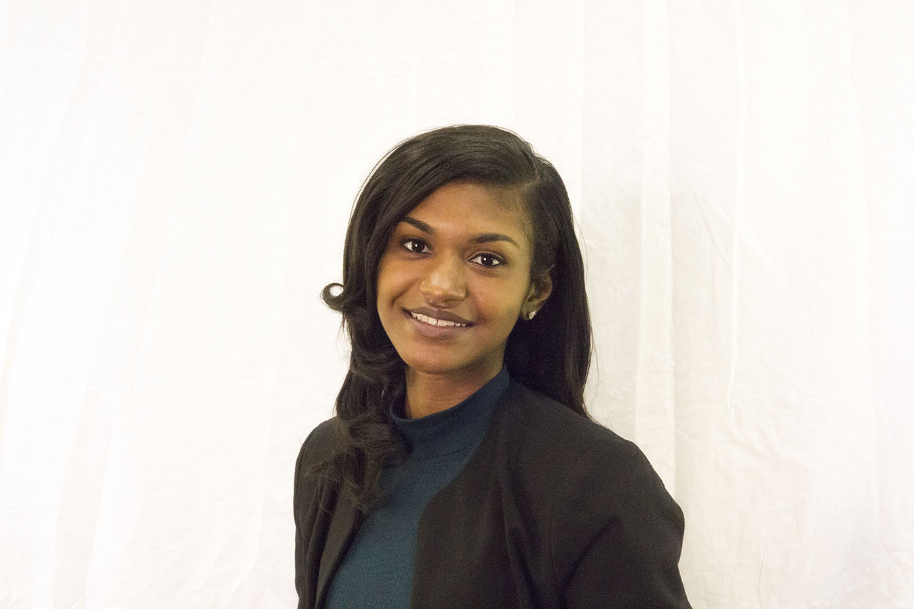

Broadcast Journalism Student
Broadcast Journalism Student
I am an aspiring broadcast journalist and student writer searching for internship opportunties to expand my AP style writing, editing and reporting skills in the newsroom. I would like to obtain a position in the field of journalism to become a news reporter and write feature articles about community and social issues.
I organized journalism-related activities and mentored middle school journalism students,conducted interviews, photographed students and designed pages for magazine project.
Student-run, online news source for the University of Maryland Jewish community. Mitzpeh chronicles events within the community, functions as a forum for members of the Jewish community to voice their opinions, and provides journalists-in-training with writing, editing, and photojournalism experience.I took pictures for feature story assignments.
Student-run, digital publication that covers daily underreported stories in the UMD community/College Park area. I edited 1-2 articles per week; work collaboratively with team to communicate updates as needed.
Founded in 2008, student-run entertainment news magazine with a monthly circulation. I attended monthly general assignment meetings (conduct interviews, research, fact check, edit, create content) and wrote feature articles/profile stories as needed.
Student-produced news organization, nightly news program, Maryland Newsline, which airs on the Web and UMTV, where it is broadcast to more than 400,000 households in the suburban Washington area. I served as a volunteer for several shows throughout the Fall Semester 2017 and operated floor cameras and teleprompter